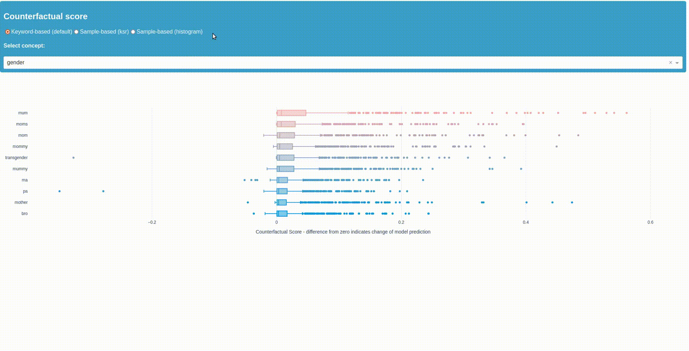

The NLP Bias Identification Toolkit


Bias is often subtle and difficult to detect in NLP models, as the protected attributes are less obvious and can take many forms in language (e.g. proxies, double meanings, ambiguities etc.). Therefore, technical bias testing is a key step in avoiding algorithmically mediated discrimination. However, it is currently conducted too rarely due to the effort involved, missing resources or lack of awareness for the problem.
Biaslyze helps to get started with the analysis of bias within NLP models and offers a concrete entry point for further impact assessments and mitigation measures. Especially for developers, researchers and teams with limited resources, our toolbox offers a low-effort approach to bias testing in NLP use cases.
Installation
Installation can be done using pypi:
Then you need to download the required spacy models:
Quickstart
from biaslyze.bias_detectors import CounterfactualBiasDetector
bias_detector = CounterfactualBiasDetector()
# detect bias in the model based on the given texts
# here, clf is a scikit-learn text classification pipeline trained for a binary classification task
detection_res = bias_detector.process(
texts=texts,
predict_func=clf.predict_proba
)
# see a summary of the detection
detection_res.report()
# launch the dashboard visualize the counterfactual scores
detection_res.dashboard(num_keywords=10)
You will get results as Boxplots, among others, indicating the impact of keywords and concepts on the prediction of your model. Example output: 
See more detailed examples in the tutorial.
Supported Models
All text classification models with probability output are supported. This includes models from scikit-learn, tensorflow, pytorch, huggingface transformers and custom models. The bias detection requires you to pass a predict_proba function similar to what you would get on scikit-learn models. You can find a tutorial on how to do that for pre-trained transformer models here.
Scientific Background
The bias detection and mitigation methods are based on the following papers:
- Garg, Sahaj, et al. "Counterfactual fairness in text classification through robustness." Proceedings of the 2019 AAAI/ACM Conference on AI, Ethics, and Society. 2019.
- Prabhakaran, Vinodkumar, Ben Hutchinson, and Margaret Mitchell. "Perturbation sensitivity analysis to detect unintended model biases." arXiv preprint arXiv:1910.04210 (2019).
Development setup
- First you need to install poetry to manage your python environment: https://python-poetry.org/docs/#installation
- Run
make installto install the dependencies and get the spacy basemodels. - Now you can use
biaslyzein your jupyter notebooks.
Adding concepts and keywords
You can add concepts and new keywords for existing concepts by editing the concept files in concepts. A tutorial on how to create custom concepts and work with them can be found here.
Preview/build the documentation with mkdocs
To preview the documentation run make doc-preview. This will launch a preview of the documentation on http://127.0.0.1:8000/.
To build the documentation html run make doc.
Run the automated tests
make test
Style guide
We are using isort and black: make style
For linting we are running ruff: make lint
Contributing
Follow the Google style guide for Python: https://google.github.io/styleguide/pyguide.html
This project uses black, isort and ruff to enforce style. Apply it by running make style and make lint.
Acknowledgements
- Funded from March 2023 until August 2023 by